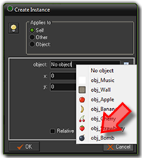
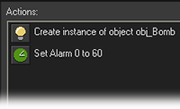

Tutorial
Page 14 of 15
Creating Bombs
To make the game more difficult we want to create additional bombs while playing the game.
We can create a new object to do this but we can as well use the music object for this. So
reopen the music object by double clicking on it in the list at the left.
To create the bombs we will use alarm clocks. You can set these clocks to a particular value and
they will then tick down to 0. Once they reach 0 an Alarm event will happen. To initialize
the alarm clock, go to then main2 tab and drag the top left action (with the clock image)
to the action list (below the play sound action). As number of steps indicate a value of 60.
A second is 30 steps so we will add a new bomb every 2 seconds. Make sure alarm 0 is selected.
Now press Add Event, click on the Alarm events and select in the menu Alarm 0.
In this event we will create the bomb. Go to the main1 tab and drag the top left action in the
action list (the light-bulb). Click on the menu icon and select the bomb object.

There is no need to set a position as the bomb will anyway jump to a random position. Next we must set the
alarm clock again. So add the alarm action (from the main2 tab) and set alarm 0 again to 60. This
will repeat the process. So the action list now looks as follows:

Close the object form, save the game, and run it. You should see more and more bombs appearing and eventually
you will click on one of them and the game will end. If you want to make the game a bit harder, you can also
let the bombs move slowly. You should by now know how to achieve that.